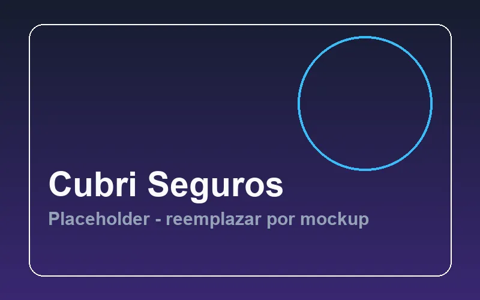
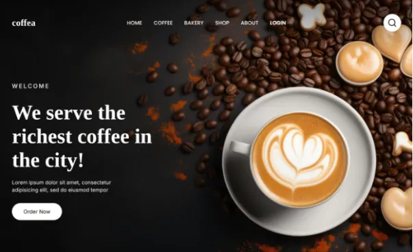
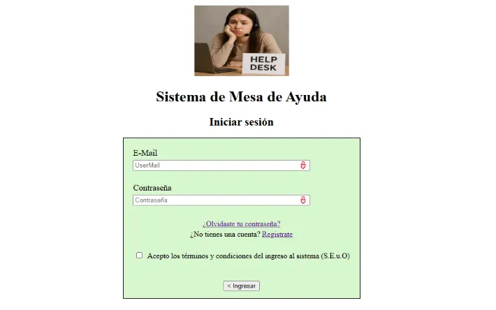
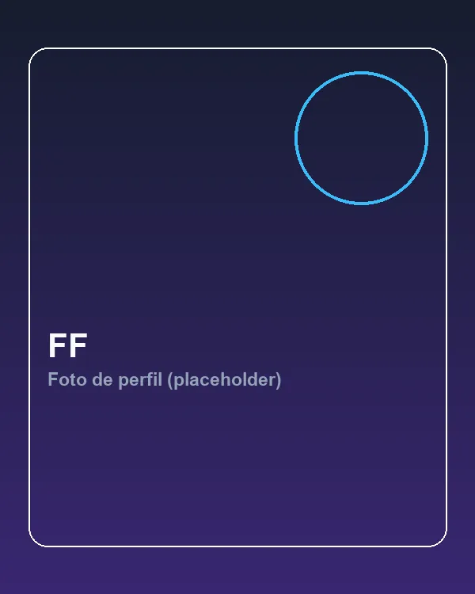

Diseño UX/UI
Diseño de interfaces claras, partiendo de la estructura de la información.
- Figma
- Prototipado
- Wireframing
- Arquitectura de Información
Disponible para trabajar
Creando experiencias digitales eficientes, escalables y accesibles.
Apasionado por la resolución de problemas y el diseño centrado en el usuario.
Concepción del Uruguay, Argentina Zona horaria: UTC-3
2
Años en Sistemas
+4
Proyectos académicos
+5
Tecnologías dominadas
Skills
Del diseño de la interfaz a su implementación en código.
Diseño de interfaces claras, partiendo de la estructura de la información.
Maquetado semántico, responsive y accesible, con código mantenible.
Flujo de trabajo para versionar, construir y publicar proyectos.
Proyectos
Tres proyectos académicos. El primero cuenta con su caso de estudio completo.

2026 · Caso de estudio
Plataforma web para la visualización y gestión de pólizas de seguros.
Resultado: interfaz accesible y de carga rápida, desplegada en Netlify.
Ver caso de estudio → Ver demo de Cubrí Seguros (se abre en una pestaña nueva)

2026
Landing page responsiva diseñada y desarrollada con un enfoque estricto en accesibilidad y performance.
Aprendizaje: aplicar accesibilidad y performance desde el diseño.
Ver proyecto →

2026
Sistema web full-stack para la gestión y seguimiento de tickets de soporte técnico.
Aprendizaje: integrar un backend con Node.js y Express con persistencia en AWS DynamoDB.
Ver proyecto →
Experiencia y formación
2025 – Actualidad
FCyT UADER
2026
Cisco Networking Academy
Abril 2025
Asistente
Sobre mí
Soy Franco, estudiante de 2do año de la Licenciatura en Sistemas de Información. Me especializo en el desarrollo web y el diseño de interfaces, disfrutando del proceso de resolver problemas complejos dividiéndolos paso a paso. Siempre busco aprender nuevas tecnologías mediante la práctica y el debugging de código.

Descomponer problemas complejos para construir soluciones lógicas y sólidas.
Aprender haciendo, priorizando la escritura de código y el debugging activo.
Crear interfaces que no solo se vean bien, sino que sean intuitivas y accesibles.
Contacto